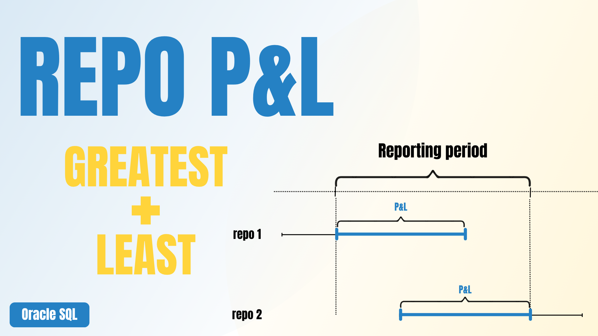

Excel VBA
VBA Shortcuts: Format Numbers and Switch Signs
Two practical macros that speed up repetitive formatting tasks in Excel.
Excel • VBA • Python • SQL • Automation
Learn practical Excel, VBA, Python and Oracle SQL techniques to simplify repetitive finance and accounting tasks and build efficient workflows

Latest tutorials
Showing all tutorials
Two practical macros that speed up repetitive formatting tasks in Excel.

Compare tables, identify missing records and reconcile data using pandas.

Retrieve the latest coupon record for each instrument using the ROW_NUMBER() window function.
Calculate repo profit and loss for a reporting period using the GREATEST and LEAST functions.
Workflows
Follow an end-to-end finance workflow across SQL, Power Query, VBA and reporting.
Build the process from the P&L calculation through GL reconciliation, Excel automation and reporting.
Downloads
Download sample files and code from every tutorial.
Source tables and reconciliation example from the Python tutorial.
Toggle between Number and General formats.
Retrieve the current coupon for each instrument using the ROW_NUMBER() window function.
Calculate repo profit and loss for a reporting period using Oracle SQL GREATEST and LEAST functions.
Switch the sign of visible numeric constant cells.
About glFlow
glFlow provides practical Excel, VBA, SQL, Python and automation tutorials built from real finance and accounting workflows. Every tutorial focuses on solving real business problems that can be applied immediately in daily work.